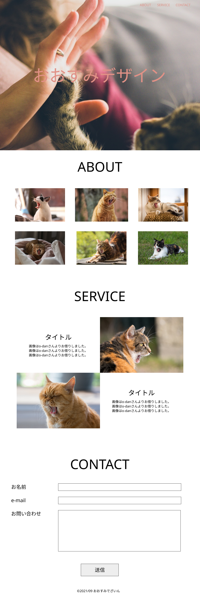
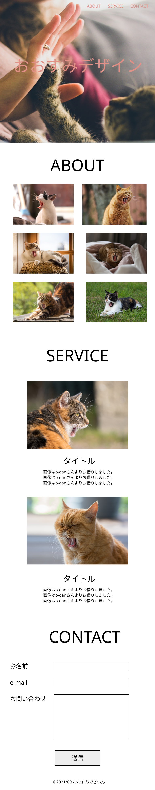
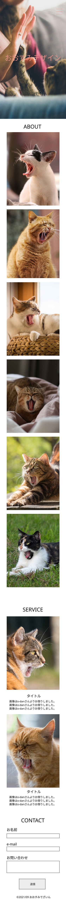

works４
制作物のご紹介

- サイト概要
- 制作時は勉強をはじめて3ヶ月時。
Twitterで「お仕事頂きました!!!」「月収UPしました!!!」などの投稿に見事に踊らされ、
自分もサイトを作らなきゃー!!!と焦り、ただただ制作しました。
（当時の自分が一体誰に何を伝えたかったのか疑問ですが…記念すべき1作目、ということで掲載してみました！笑）
- 制作の目的
- 「自分も何か作らなくては!!!」と、とにかく焦りを感じながら制作した記憶があります🤣
- ターゲット
- 自分自身
- 制作期間
- 2021年9月から5日ほど(勉強開始から3ヶ月目)
- 担当したこと
- サイトデザイン・コーディング(HTML・CSS・jQuery)
- 制作の思い出・意識した点
- 制作当時、勉強開始３ヶ月時点。当時はこれでも頑張ったぞー!!!と満足のいくものでした笑
デザインの知識もなく、要件定義という言葉も知らず、ただ自分の好きな猫ちゃんの写真を並べただけというお恥ずかしいページですw
こうして見返しても…一体何が伝えたいのか謎の制作物ですが、今現在少しずつでも成長できているなと感じられて嬉しいので、掲載させていただいた次第です。


